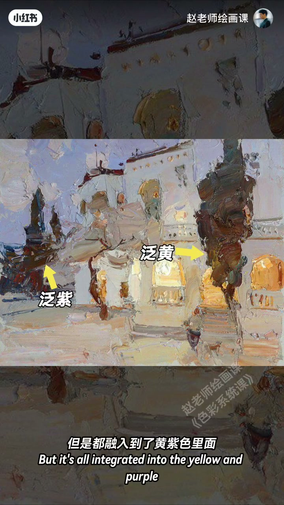
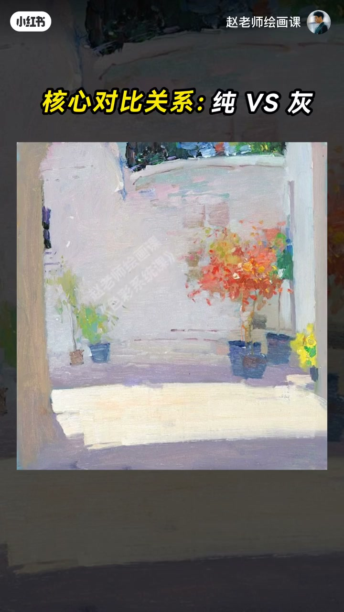
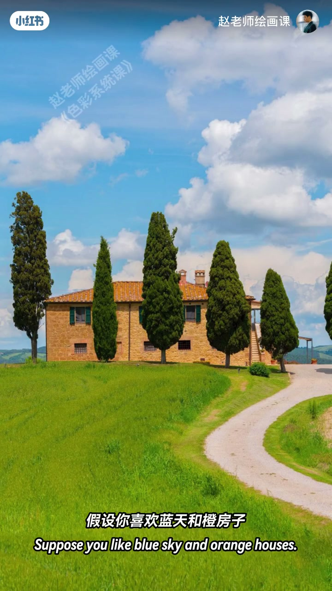
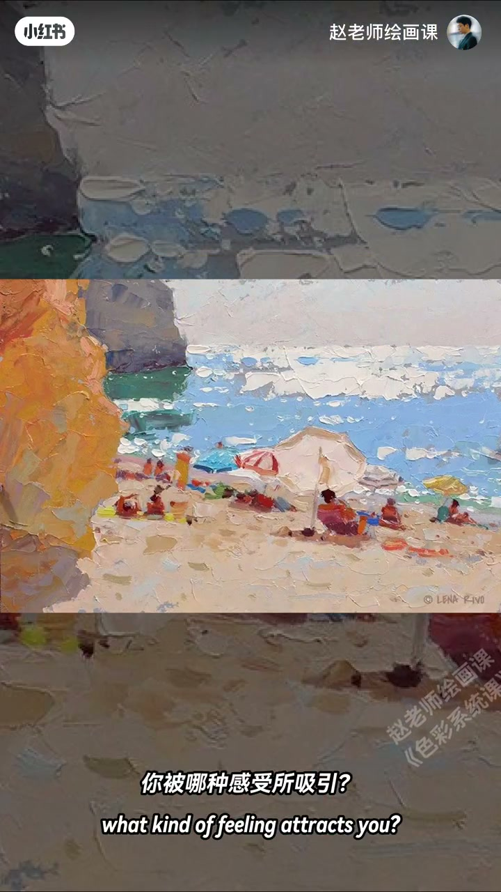

内容要点
色彩不是越多越丰富。一幅画突出黄紫对比，树绿与桃红都融入黄紫才好看；复原固有色立刻违和。也可眯眼看出大面积灰与高纯的纯灰核心，或树深与山浅的明度核心——破坏秩序就失美感。用法三步：定主角对比；他色降纯、缩面积或融入主角；反复眯眼检查是否一眼仍见那组核心。规则只是拐杖，更要回归感受，让核心对比匹配想表达的情绪。
知识结构
抓黄紫／纯灰／明度等核心对比。
定主线；他色退让；眯眼验秩序。
对比匹配情绪；规则是拐杖。
统一色调的关键手段之一是突出唯一核心对比，并让其余颜色退出抢戏。
00:00-01:26验证：必须抓住主要对比
若只能选一对色会怎样？看见一幅画才发现突出的是黄紫对比，印象中墨绿的树也融入黄紫。把树绿复原、再复原中间桃红，都不好看或违和——一定要抓住主要对比。换一张眯眼：大面积灰与高纯对比即纯与灰的核心；往灰加点纯、把纯降饱和，破坏纯灰秩序就失去美感。
全灰画面也可眯眼见树深与山浅的明度对比带来空间感。00:35／01:25 证据。


01:26-02:52怎么用好核心对比
突出核心对比正是统一色调最重要手段之一（其余办法回看上期）。第一步确定主角对比，如托斯卡纳喜欢蓝天与暖房子就定为主线；第二步其他颜色向主角靠拢：绿地降纯或缩面积，树融入天空蓝——让它们退出勿抢戏；第三步过程中反复眯眼：能否一眼看出那组核心？若另有同样强的冲突就要调。
02:25 托斯卡纳退让示范。

02:52-03:58规则是拐杖，感受是腿
画画前一定要先假定核心对比吗？当然不是。规则只是拐杖，走路还靠自己的腿。用方法前最重要回归感受：被红绿冲撞、蓝绿宁静、冷暖互衬、纯灰层次还是明暗戏剧吸引？你选的核心对比一定要匹配想表达的画面情绪。
作业：找喜欢的素材试找核心对比。下期聊如何感受色彩情绪。03:25 感受卡。

完整转录（126段）
以下文本由 Whisper medium 模型自动转录，可能存在少量识别误差，已尽可能修正。
这个世界有无数种色彩
如果只选一对
你会选什么
我喜欢春天的黄绿
还有
等等
为什么我只能选一对
不是色彩越多
才越丰富吗
以前我也是这么想
直到我看见这幅画
才发现
画面里好像只突出了
黄紫色的对比
其他的颜色
特别是这两棵树
印象里应该是墨绿色吧
但是呢
都融入到了黄紫色里面
那画面是因为这样才好看的吗
我们来验证一下
先把树的绿色复原一下试试
啊
完全没有刚才好看了呢
再把中间的桃红也复原一下呢
你感觉很违和耶
明白了
一定要抓住主要的对比
那老师
这会不会是巧合呢
好
那我们再来换一张
你觉得最强的对比是哪种
是紫色
橙色
嗯
又有黄色和绿色
看不出来了呢
试试瞇起眼睛来看
对
我看出来了
这大面积的灰色
和高纯度颜色的对比
没错
这就是纯一灰的核心对比关系
继续反向验证一下
往灰色里面加点纯
再把纯色降低饱和度
确实啊
破坏了这个纯灰的秩序
完全失去了原有的美感
那老师
这幅画中
每块颜色都是灰灰的
又怎么来说呢
我们还是瞇起眼睛来看
对抗啊
画中的树的深色
和山的浅灰色
形成了强烈的明度对比
这让山有了很强的空间感
哦原来是这样啊
真是厉害呢
那老师
我们该怎么运用这个原理呢
其实啊
我们刚才讲到的
突出核心对比关系
正是统一色调的
最重要的手段之一
如果想学全所有的
统一色调的办法
建议回看上一期的视频
怎么用好这关系
首先第一步
就是确定你的主角对比
比如这幅美丽的托斯卡拉
假设你喜欢蓝天和城房子
那我们啊就选定这个作为主线
第二步呢
就是所有其他的颜色
都要向这个主角来靠拢
比如绿地
我们来降低纯度
或者缩小面积
这一排排树呢
我们来让它融入天空的蓝色
这三种方法
都可以让这些其他的颜色退出
千万不要和主角来抢戏
第三步呢
就是画的过程中
我们反复眯起眼睛来检查
能不能一眼
看出那组核心对比呢
如果能
说明画面的秩序还在
如果出现了另一种
同样强烈的冲突
那就一定需要调整
真是厉害啊老师
那我们在画画前
一定要先假定一个核心对比吗
当然不是
规则只是拐杖
走路呢
还得靠我们自己的腿
在用这些方法之前
最重要的是回归感受
当你看到对象的时候
你被哪种感受所吸引
是红绿的冲撞
还是蓝绿的宁静
是冷暖的护衬
还是纯灰的层次感
又或者是明暗的强烈反差
带来的戏剧效果
总之你选择的核心对比
一定要匹配你想表达的画面情绪
好了今天的作业
找一张自己喜欢的素材
试着找出它的核心对比关系
然后在评论区告诉我
下期我们来聊一聊
如何感受色彩情绪
拜拜